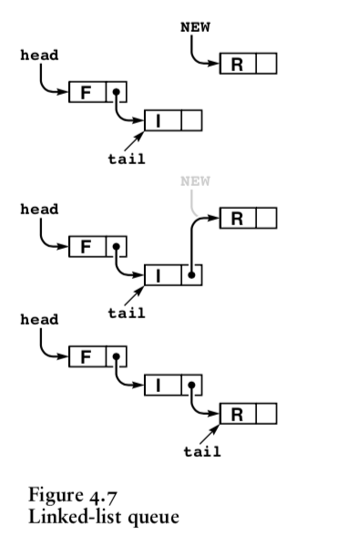
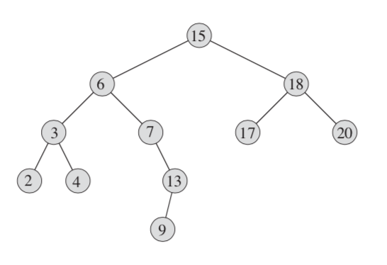
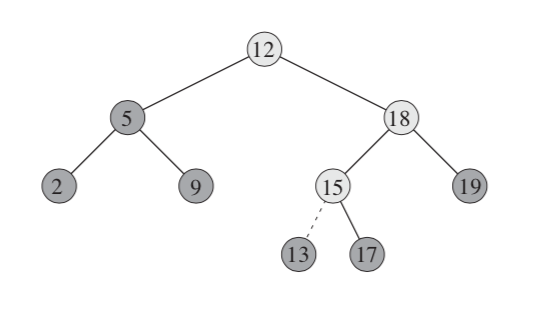
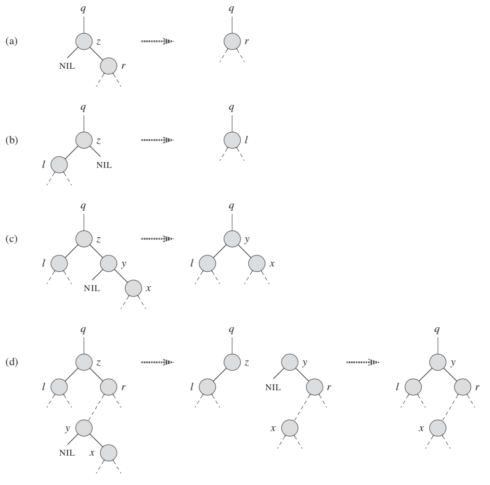
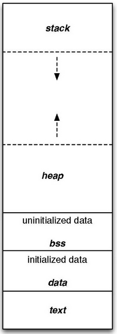

Data Structure - 2020 KNOU
Table of Contents
- 1. Abstract Data Type
- 2. Tree
- 3. C language briefing
- 3.1. variable
- 3.2. function
- 3.3. printf
- 3.4. array
- 3.5. char * string aka. C string
- 3.6. struct
- 3.7. typedef struct
- 3.8. pointer & reference
- 3.9. Self Referential Struct
- 3.10. control flow
- 3.11. operator precedence
- 3.12. memory model for programmer.
- 3.13. preprocessor
- 3.14. Input / Ouput
- 3.15. Error Handling
- 4. TODO
1 Abstract Data Type
We consider abstract data types (ADTs), which allow us to build programs that use high-level abstractions.
With abstract data types, we can separate the conceptual transformations that our programs perform on our
data from any particular data structure representation and algorithm implementation.
1.1 Stack ADT
Suspends a computation or data and restore them in a particular order.
LIFO (Last In First Out).
1.1.1 The Interface
// creating ADT instance void stack_init(); // check wether ADT instance is empty bool stack_empty(); // insert an item to ADT instance void stack_push(Item); // getting back an item from ADT instance Item stack_pop();

1.1.2 Applications
- Arithmetic expression conversion. Infix notation(for Human) to Postfix(for Computer) notation.
- Arithmetic expression evaluation.
- Depth first search algorithm.
Function call and return state. it's called
Call stack.For example, The stack trace is displayed when the function call throws an exception in java,
public class Main { public static void main(String[] args) { a(); } static void a() { b(); } static void b() { c(); } static void c() { d(); } static void d() { Thread.dumpStack(); } } // java.lang.Exception: Stack trace // at java.base/java.lang.Thread.dumpStack(Thread.java:1383) // at Main.d(Main.java:6) // at Main.c(Main.java:5) // at Main.b(Main.java:4) // at Main.a(Main.java:3) // at Main.main(Main.java:2)
1.2 Queue ADT
Inserting elements from one side and popping out them from the other side.
FIFO (First In First Out).
1.2.1 The Interface
// creating ADT instance void queue_init(); // check wether ADT is empty bool queue_empty(); // add item to the back void queue_push(item); // get an item from the front item queue_pop();
1.2.2 Applications
- OS thread scheduling.
- FCFS: first come first served policy.
- RR: Round-Robin.
- Processing network packet.
- Breadth-first Search(BFS) in Searching algorithm.
1.2.3 Implementation
- Linked list Queue
A linked list based queue using Self Referential Struct.

- Circular Queue
An array based queue implementation. it's also called
ring buffer// Preserve one slot for differentiating empty and full state. #define CAPACITY1 256 struct Queue { int arr[CAPACITY1]; int front; int rear; }; bool is_queue_empty(Queue *queue) { return queue->front == queue->rear; } bool is_queue_full(Queue *queue) { return queue->front == (queue->rear + 1) % CAPACITY1; }
2 Tree
2.1 Binary Tree
2.1.1 Properties of Binary Tree
it has two children nodes. left and right
The height of the tree which has total n nodes: h = Ceil(log2(n+1)) (why?)
- full binary tree
All nodes have either two children or none.
- perfect binary tree
All nodes have both children except on the leaf.
All leaves should be at the same depth from the root.
- complete binary tree
Every nodes are completely filled except last level of nodes.
On the last level, all nodes should be as far left as possible.
2.2 Tree Traversal
2.2.1 Preorder
Node => Left => Right
void preorder_traverse(Tree *tree, Node *node) { if (node == NULL) { return; } do_something(node); preorder_traverse(tree, node->left); preorder_traverse(tree, node->right); }
2.2.2 Inorder
Left => Node => Right
void inorder_traverse(Tree *tree, Node *node) { if (node == NULL) { return; } inorder_traverse(tree, node->left); do_something(node); inorder_traverse(tree, node->right); }
2.2.3 Postorder
Left => Right => Node
void postorder_traverse(Tree *tree, Node *node) { if (node == NULL) { return; } postorder_traverse(tree, node->left); postorder_traverse(tree, node->right); do_something(node); }
2.3 Binary Search Tree
The search tree data structure supports many dynamic-set operations,
including SEARCH, MINIMUM, MAXIMUM, PREDECESSOR, SUCCESSOR, INSERT, and DELETE.
2.3.1 Tree Minimum
def TreeMinimum(x): while x.left is not None: x = x.left return x
Can you implement TreeMaximum?
2.3.2 Tree Inorder Successor

def TreeSuccessor(x): if x.right is not None: return TreeMinimum(x.right) y = x.p while y is not None and x == y.right: x = y y = y.p return y
What is the key number of inorder successor of the 13?
How do we implement TreePredecessor?
2.3.3 Tree Insert

def TreeInsert(T, z): y = None x = T.root while x is not None: y = x if z.key < x.key: x = x.left else: x = x.right z.p = y if y is None: T.root = z # tree was empty elif z.key < y.key: y.left = z else: y.right = z
2.3.4 Tree Delete
def TransPlant(T, u, v): if u.p is None: T.root = v elif u == u.p.left: u.p.left = v else: u.p.right = v if v is not None: v.p = u.p

def TreeDelete(T, z): if z.left is None: TransPlant(T, z, z.right) elif z.right is None: TransPlant(T, z, z.left) else: y = TreeMinimum(z.right) if y.p != z: TransPlant(T, y, y.right) y.right = z.right y.right.p = y TransPlant(T, z, y) y.left = z.left y.left.p = y
3 C language briefing
3.1 variable
declaration:
<type> <identifier> [= <initial value>];int foo; char bar = 'c';
3.2 function
- declaration:
<return type> <identifier> ( [parameters] ) {<body statements> [<return> <expression>;]} parameter definition is almost same with the variable decl. it can be extended with comma character
int some_func(int a, int b, int c) { return a + b + c; } // `char *name` is a pointer parameter we'll explain that later on. void foo_func(char *name) { printf("hello %s\n", name); }
3.3 printf
- A function for displaying variable. it's defined in the `stdio.h` (standard input output) it takes an format specifier and constants and variables to print.
format specifier: a string for defining how to print the variable.
"%d" int "%2d" int at least 2 characters wide in right aligned. "%-2d" int at least 2 characters wide in left aligned. "%02d" int at least 2 characters wide with leading zeros. "%x" int as hexidecimal notation. "%f" float "%c" char "%s" char * int a = 1; printf("%d\n", a);
3.4 array
declaration:
<type> <name> [<size>][<size>]*the `SIZE` must be known at compile time(the time when the executable is being built by the compiler). c language spec mandates row-major order for storing multi-dimensional array. https://en.wikipedia.org/wiki/Row-_and_column-major_orderint arr[5]; // index range: [0~4] int arr2[2][3]; // index range [0~1][0~2]
usage: array element can be accessed with index(normally integer value in C language).
int x = arr[0]; int y = arr2[1][2]; printf("%d %d\n", x, y);
3.5 char * string aka. C string
it's just array of `char` with '\0' on the end of the array.
char *foo = "abcd"; char foo[5] = {'a', 'b', 'c', 'd', '\0'};
3.6 struct
- declaration:
struct <identifier> {<field delcarations>} [<instance>]; usage:
// decl Foo struct struct Foo { int field1; char field2; }; // init Foo struct instance struct Foo foo = { 0, 'a' }; struct Foo foo = { 'a', 0 }; // dot syntax called "designated field initializer" struct Foo foo = { .field1 = 0, .field2 = 'a' }; // accessing field printf("field1: %d, field2: %c\n", foo.field1, foo.field2);
3.7 typedef struct
declaration:
typedef struct <identifier> {<field delcarations>} [<typename>];// decl Foo struct as a type typedef struct Foo { int field1; char field2; } FooType; // init Foo struct type instance FooType foo = { .field1 = 0, .field2 = 'a' };
3.8 pointer & reference
- purpose: Sometimes, we need to move around variables without copying it's contents for performance reasons and there are a few cases where it's mandatory. for example, heap allocated pointer and it's content.
3.8.1 pointer
- declaration:
<type> * <identifier> [= <initial reference value>]; - it's variable of an address for some variable or function etc.
- it's also used as an dereferencing mechanism when it is used outside of declaration.
3.8.2 reference
- declaration: &<identifier>; it's a mechanism for getting an address of the target.
3.8.3 dereferencing
- Getting the content of the pointer.
- non-struct variable:
*<identifier> - struct variable:
<identifier> -> <field name>aka `arrow syntax`.
- non-struct variable:
- dereferece example
#include <stdio.h> typedef struct Foo { int a; int b; } Foo; int main() { Foo foo = {.a = 1, .b = 2}; Foo *bar = &foo; Foo wat = *bar; // dereferenced foo struct copied to wat. printf("foo address: %p\n",&foo); printf("bar address: %p\n",bar); printf("wat address: %p\n",&wat); return 0; } // foo address: 0x7ffee918b200 // bar address: 0x7ffee918b200 // wat address: 0x7ffee918b1f0
3.8.4 pointer arithmetic
- pointer value can be changed just like ordinary integer values.
3.8.5 example
int a = 1; // `&a` means getting the address of the `a`. // the pointer variable `b` is set by address of the `a`. int *b = &a; void foo(int *a) { //here the a is dereferenced by `*` operator. aka. getting the content. printf("%d\n", *a); } // if variable is a struct, we can dereference the fields of it with `->` syntax. struct Foo { int field1; char field2; }; struct Foo foo = { 0, 'a' }; struct Foo *pfoo = &foo; printf("field1: %d, field2: %c\n", pfoo->field1, pfoo->field2); int arr[5] = {1,2,3,4,5}; int *pint = arr; printf("%d\n", *pint); // print current content of parr. pint++; // increase pint address by size of single integer. printf("%d\n", *pint++); // print then content and increase pointer at the same(?) time. pint += 1; // printf("%d\n", *pint); // what's the result of this? char *pchar = (char *)pint; pchar += 4; pint = (int *)pchar; printf("%d\n", *pint); // what's the result of this?
3.9 Self Referential Struct
A struct contains a pointer field to same type of struct instance.
struct Foo contains same type struct Foo pointer field next
// ++--------------+ // || | // \/ | typedef struct Foo { // | // | struct Foo *next; // | // \ | // \--------------------+ } Foo;
3.10 control flow
3.10.1 if else
3.10.2 for loop
3.10.3 while, do ~ while
3.10.4 switch
synatx
switch (<identifier>) { case <expression>: //do something this.; //do something that.; break; case <expression>: ... break; case <expression>: case <expression>: // may do something in between matching cases; case <expression>: ... break; default: //do something in case of none of the matches are successful.; }
- the
<expression>for case must beconstant expression. - the
defaultis optional.
3.10.5 break
Abort the nearst loop construct like
for,while,do ... whileand theswitch.for(int i =0; i < 10; i++) { for(int j =0; j < 10; j++) { // <-------------+ // | if ( i > 5 && j > 5) { // | break; // this aborts inner for loop---+ } } }
3.10.6 continue
similar to break, it does not completely aborts loop entirely but just aborts single execution of the loop.
for(int i =0; i < 10; i++) { if ( i % 2 == 0 ) { // <=== whenever this condition is met, those executions will be skipped. continue; // | } // | // | printf("I: %3d, J: %3d\n", i, j);// <----------------------------------+ printf("hooray!!"); // <----------------------------------+ }
3.10.7 goto
- synatx:
goto <label name>; - can jump to label
- famous quote: "goto considered harmful" https://www.explainxkcd.com/wiki/index.php/292:_goto
3.10.8 label
- synatx:
<label name>: - a placeholder for goto
3.11 operator precedence
3.12 memory model for programmer.
3.12.1 whole executable memory layout

- TEXT: Program instructions. read only
- DATA: Global and static variable.
- BSS: any uninitialized variable including global and static one.
3.12.2 heap allocated variable.
- it can be slow compared to stack. (why?)
- heap allocation is runtime operation. (answer)
it's allocated/deallocated by programer manually.
For c language, the
mallocandfreefunction is used for allocation/deallocation.
#include <stdlib.h> // allocation for 100 chars. // malloc returns (void *) type, so we must type conversion. char *foo = (char *)malloc(100); // deallocation free(foo);
3.12.3 stack allocated variable.
- It can be fast compared to heap allocation. (why?)
The total system stack size of a executable is predetermined by compiler setting
and/or the OS. In fact, the change of stack size is just a stack pointer movement (answer).
the memory management is controlled by language semantics.
For c language, block scope is the main sematic for stack allocations.
int main() { int a; { int b; } // <== here b is destroyed return 0 } // <== here a is destroyed
3.13 preprocessor
3.13.1 #include
- syntax:
#include <relative path>or#include "relative path" - double quote
#include "foo.h"vs angle bracket#include <foo.h> - double quote searches current directory of the current source or project file.
- single quote searches
system directorywhich is set by compiler option and configurations.
3.13.2 #define
- syntax:
#define A B - replace
AwithB
3.13.3 #ifdef #elif #endif
3.14 Input / Ouput
3.14.1 Console I/O
- input:
void scanf(char *format, *arguments...)
int a; scanf("%d", &a);
- output:
void printf(char *format, arguments...)
int a = 1; printf("%d", a);
3.14.2 File I/O
- opening a file:
FILE *fopen(char *filename, char *mode) - closing a file:
fclose(FILE *file) the
modeparameterMode Read as Action Operation File exists File doesn't exist "r" read Open Read read from start failure to open "w" write Create Write destroy contents create new "a" append Append Write write to end create new "r+" read extended Open Read/Write read from start error "w+" write extended Create Read/Write destroy contents create new "a+" append extended Open Read/Write write to end create new 
- Input
- read single line from file:
char *fgets(char *buffer, FILE *file) - read single character from file:
int fgetc(FILE *file) - beware that
fgetcreturnsint(why?)
- read single line from file:
- Output
- write a character to file:
int fputc( int ch, FILE *stream ) - write a null-terminated string to file:
int fputs(char *str, FILE *stream )
- write a character to file:
Special FILE pointer
FILE *stdin; // standard input FILE *stdout; // standard output FILE *stderr; // standard error // what is the differences between these operations? printf("foo"); fprintf(stdout, "foo"); fprintf(stderr, "foo");
File Error Handling
Check the return value of
fopenfputsfgetsNon-zero value indicates that there's error.
Most commonly checked error value is
EOFwhich indicates End of File or some other errors.
example
FILE *file = fopen("foo.txt", "r"); char *result; char buf[256]; while ( (result = fgets(buf, 256, file)) != NULL) { printf("%s", result); } fclose(file);
3.15 Error Handling
Interal error state will be set when some c functions is being executed if the operation fails.
We can check these errors by int ferror( FILE *file ) in file handling etc.
the return value is either 0 on successful or non-zero value
Windows
Linux